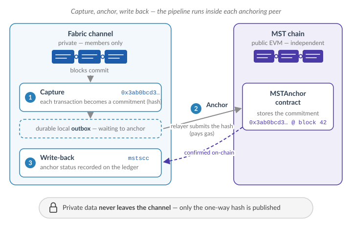
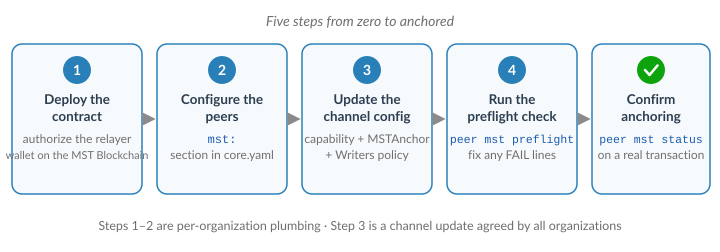
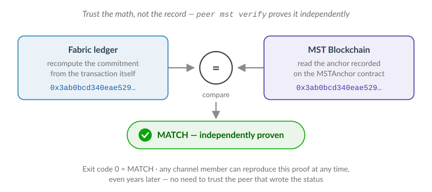

MST Proof-Anchoring
MST proof-anchoring lets a channel record a tamper-evident proof of each of its transactions onto an external EVM chain (the MST chain), and then write a short anchor status back onto the Fabric ledger. It gives you an independent, publicly verifiable timestamp for Fabric activity without exposing any private data — only a one-way commitment (a hash) ever leaves the channel.
This section explains what the feature does, what you must prepare, and how to turn it on for a channel you have already created in the dashboard (see Channels).
Note: MST anchoring is an opt-in feature and is off by default. A network that does not enable it behaves exactly like a standard Hyperledger Fabric network.
How it works
Each participating peer runs an embedded pipeline:
- Capture — as blocks commit, the peer computes a canonical commitment (a hash) for each in-scope transaction and stores it in a durable local outbox.
- Anchor — a relayer submits the commitment to the channel's MSTAnchor smart contract on the EVM/MST chain and waits for confirmations.
- Write-back — once anchored, the peer records an anchor status on the Fabric ledger through the built-in
mstsccsystem chaincode, so any channel member can query "is transaction X anchored, and where?"
Nothing but the commitment hash is published. To prove a transaction later, you recompute its commitment and compare it against the on-chain record with the peer mst verify command.

Before you begin
Make sure all of the following are in place. Each is a hard requirement; the peer mst preflight command (below) checks most of them for you.
| Requirement | Why |
|---|---|
| All peers and orderers run the MST-enabled binary | The channel enables a capability (V2_5_MSTANCHOR) that a stock binary refuses. Every peer and orderer on the channel must be the MST build. |
mstscc enabled in each peer's core.yaml (chaincode.system.mstscc: enable) | It is the write-back target. |
| NodeOUs enabled on every organization's MSP | The write-back is authorized only for a peer-role identity; without NodeOUs the classification is unavailable and write-backs are rejected. |
| An EVM / MST endpoint (JSON-RPC URL) reachable from each anchoring peer | The relayer submits anchors there. |
| A deployed MSTAnchor contract (one per channel) | The on-chain anchor registry. Deploy it out of band and record its address. |
| A funded relayer account on the MST chain | The relayer pays gas for anchor transactions. |
The relayer wallet authorized on the contract (setRelayer) | Only allowlisted wallets may write anchors. |
Tip: Run anchoring on a small, designated set of peers (for example one per organization, optionally with one hot-standby), not on every peer. Extra anchoring peers only produce redundant work — the feature is safe with any number, but there is no benefit to running it everywhere.

Step 1 — Deploy the MSTAnchor contract and authorize the relayer
Deploy one MSTAnchor contract for the channel on your MST chain (a transparent upgradeable proxy is recommended so the address stays stable). Then add each anchoring peer's relayer wallet to the contract's allowlist:
# from the peer CLI, using an owner key on the contract
peer mst relayer add 0xRelayerWalletAddress -C mychannel
Record the contract address and the chain's chain id — you will enter both into the channel configuration in Step 3.
Step 2 — Configure the peer (core.yaml)
On each anchoring peer, enable the pipeline and point it at the MST endpoint and the relayer identity. Only peer-local plumbing lives here; the anchoring policy is set on the channel (Step 3).
mst:
enabled: true
# Channels to anchor; empty = every channel this peer joins.
channels: []
evm:
# This peer's MST RPC endpoint.
rpcURL: http://127.0.0.1:8545
# Warn once a minute when the relayer's gas balance is low (gwei); 0 = off.
minBalanceGwei: 0
# Fabric identity that submits the write-back. MUST be a peer-role (NodeOUs)
# node identity — the peer's own signcert — not a client/admin certificate.
writeback:
mspID: Org1MSP
certPath: /var/hyperledger/.../peers/peer0.org1.example.com/msp/signcerts/cert.pem
keyPath: /var/hyperledger/.../peers/peer0.org1.example.com/msp/keystore/priv_sk
# Serves Prometheus /metrics and /healthz; empty disables.
metricsAddr: ""
Also confirm, in the same core.yaml:
peer.gateway.enabled: trueandpeer.discovery.enabled: true— the write-back submits through the embedded gateway.chaincode.system.mstscc: enable.
Note: Keep the relayer's EVM private key out of files. Provide it via an environment variable or secret store, never a committed config.
Restart the peer after editing core.yaml.
Step 3 — Enable anchoring on the channel
Anchoring is a channel-level, all-org-agreed setting. Two things go into the channel configuration together:
3a. Enable the V2_5_MSTANCHOR capability
Under Application capabilities, add:
Capabilities:
Application:
V2_5: true
V2_5_MSTANCHOR: true
3b. Add the MSTAnchor value
Application:
# ...
MSTAnchor:
Enabled: true
ContractAddress: "0xYourPerChannelMSTAnchorContractAddress"
ChainID: 1337
CaptureMode: opt-in # "opt-in" (scoped) or "all"
# IncludeChaincodes: [myapp] # only these chaincodes (opt-in mode)
# ExcludeChaincodes: []
BatchStrategy: individual # "individual" or "merkle"
Confirmations: 1
# Flush cadence (latency vs gas): per-tx | batch | interval | cron
CadenceMode: per-tx
3c. Allow the peer role in the channel Writers policy
This is easy to miss. The write-back is signed by a peer-role identity, but the orderer evaluates the transaction against the channel Writers policy — whose NodeOUs default is OR('Org.admin','Org.client'), which excludes the peer role. For each anchoring organization, widen Writers to include peer:
Writers:
Type: Signature
Rule: "OR('Org1MSP.admin','Org1MSP.client','Org1MSP.peer')"
Apply all three as a normal channel-configuration update.
Note: Setting
MSTAnchorrequiresV2_5_MSTANCHOR; the configuration is rejected without it. This is deliberate — it turns "every peer must run the MST binary" into an explicit, safe upgrade gate.
Step 4 — Run the preflight check
Before (or right after) applying the change, validate the channel against the live chain:
peer mst preflight -C mychannel
It reports a checklist:
channel: mychannel
[PASS] enabled MST anchoring is enabled
[PASS] rpc endpoint connected; node reports chain id 1337
[PASS] chain id config chainID 1337 matches the node
[PASS] contract 0x... responds as an MSTAnchor contract
[PASS] nodeous all application org(s) have NodeOUs peer classification
[PASS] writers all application org(s) admit the peer role in their Writers policy
preflight: OK
Any FAIL line tells you exactly what to fix (unreachable RPC, wrong chain id, missing contract, NodeOUs not enabled, or Writers that rejects the peer role).
Step 5 — Confirm anchoring is working
Submit a normal transaction to an in-scope chaincode on the channel, then check its anchor status:
# was this Fabric transaction anchored, and where?
peer mst status <fabric-tx-id> -C mychannel
fabric tx id : 7e27d846dc6d4c09...
anchor ref : 0xaad9229fdd7f3770...
status : CONFIRMED
recorded at : 2026-07-20T10:53:07Z
Other useful queries:
peer mst count -C mychannel # how many anchors recorded
peer mst list -C mychannel # list recorded anchors
peer mst is-anchored <fabric-tx-id> -C mychannel
Reading an anchor record
The mstscc ledger record for a transaction has four fields:
| Field | Meaning |
|---|---|
fabric_tx_id | The Fabric transaction that was anchored. |
anchor_ref | The EVM transaction hash where the commitment was recorded on the MST chain (0x + 64 hex). A pointer you can open in an EVM explorer. |
status | CONFIRMED — a peer node asserts the transaction is anchored. |
recorded_at | Timestamp of the write-back transaction. |
Important: The ledger record is an attestation plus a pointer, not a proof.
mstscccannot read EVM state, so it stores what a peer asserts. For certainty, resolve the pointer against the real chain withpeer mst verify(below), which recomputes the commitment and checks the on-chain anchor.
Verifying a transaction end-to-end
To independently prove a transaction is anchored — recompute its commitment from the ledger and compare it against the on-chain record:
peer mst verify <fabric-tx-id> -C mychannel
commitment : 0x3ab0bcd340eae529...
fabric ledger fact: recorded (ref 0xaad9229f...)
on-chain anchor : commitment 0x3ab0bcd340eae529..., block 42
result : MATCH

Exit code 0 = MATCH, non-zero = no match / not anchored. Verification reads the on-chain anchor by transaction id, so it succeeds even if the human-facing anchor_ref pointer is missing.
Troubleshooting
| Symptom | Cause and fix |
|---|---|
configtxlator: Unknown Application ConfigValue name: MSTAnchor | You are running a stock configtxlator. Use the MST build for configtxlator, configtxgen, peer, and orderer. |
Write-back rejected with FORBIDDEN ... 'Writers' from the orderer | The channel Writers policy excludes the peer role — add it (Step 3c). |
| Anchors land on-chain but no ledger status appears | The write-back org lacks NodeOUs, or mst.writeback.* points at a client cert instead of the peer's node signcert. Check peer mst preflight and the peer startup warning. |
RecordAnchor invalidated: INVALID_CHAINCODE | The peer binary predates the mstscc validation support — rebuild with the current MST binary. |
MVCC_READ_CONFLICT warning in the committer log | Benign: two write-backs for the same anchor raced; one recorded it, the other is a harmless duplicate. The anchor is recorded. Reduce it by running anchoring on fewer peers. |
anchor ref shows 0x0000...0000 | The write-back could not determine the anchoring tx hash. It does not affect verification (which reads on-chain by transaction id). |
anchor_ref differs from a peer's local evm_tx_hash | Expected after a retry or with multiple peers: the record holds the tx that actually anchored the commitment, while a peer's outbox holds its own latest (possibly no-op) submission. |
Configuration reference
Peer-local (core.yaml, mst: section)
| Key | Purpose |
|---|---|
enabled | Turn the embedded pipeline on for this peer. |
channels | Peer-local opt-out list; empty = all joined channels. |
evm.rpcURL | This peer's MST JSON-RPC endpoint. |
evm.minBalanceGwei | Low-gas-balance warning threshold (gwei); 0 = off. |
writeback.mspID / certPath / keyPath | The peer-role identity that signs the write-back. |
outboxPath | Local durable outbox directory (LevelDB backend). |
metricsAddr | Prometheus /metrics + /healthz address; empty disables. |
Channel-governed (configtx.yaml, Application.MSTAnchor)
| Key | Purpose |
|---|---|
Enabled | Turn anchoring on for the channel. |
ContractAddress | The channel's MSTAnchor contract (0x address). |
ChainID | Expected MST chain id (pins the chain). |
CaptureMode | opt-in (scoped) or all (every transaction). |
IncludeChaincodes / ExcludeChaincodes | Anchoring scope in opt-in mode. |
BatchStrategy | individual (per-tx record) or merkle (one root per batch). |
Confirmations | On-chain confirmations required before write-back. |
CadenceMode + CadenceN / CadenceInterval / CadenceCron / CadenceMaxWait | Flush cadence — trades anchoring latency against gas cost. |
Command reference (peer mst)
| Command | Description |
|---|---|
peer mst preflight | Validate the channel's MST config against the live chain. |
peer mst status <txid> | Show the ledger anchor status for a transaction. |
peer mst is-anchored <txid> | Yes/no whether a transaction is anchored. |
peer mst list | List anchor records on the channel. |
peer mst count | Count anchor records on the channel. |
peer mst verify <txid> | Recompute the commitment and compare it against the chain (proof). |
peer mst channel-config | Show the channel's effective MST configuration. |
peer mst onchain <txid> | Read the anchor directly from the contract. |
peer mst relayer add|remove <wallet> | Manage the contract's relayer allowlist. |
peer mst pipeline | Inspect the embedded pipeline / outbox status. |
Add -C <channel> (and, where relevant, --peerAddresses / --rpc) to any of the above.